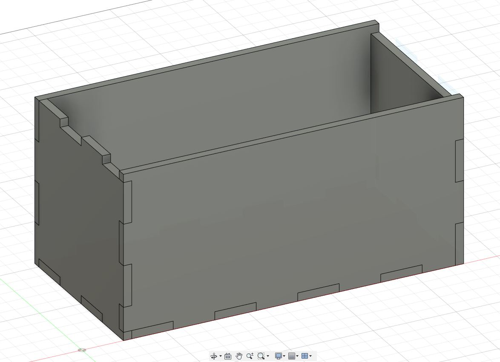
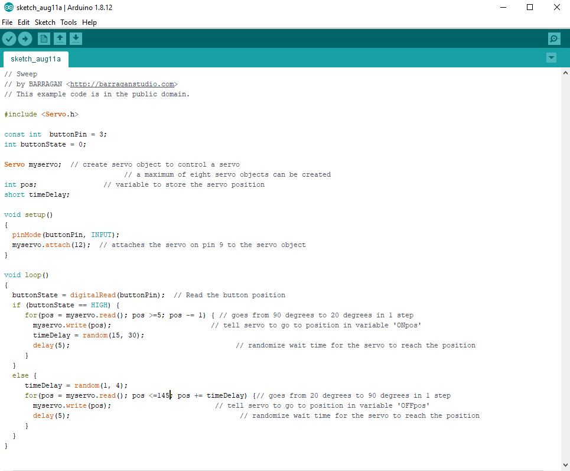

03 August 2020
To start it off I need to create a box which I'm going to laser cut out. I start by measuring the length of the arduino board and a half breadboard. Once I got those measurements, I can begin to build my box.
With the Box being at 105mm in height, 205mm in length and 105mm in depth. Each Teeth is separated at 25mm.
I followed by cutting holes through the box for the movable lid.

After that it was time to make the holder for the servo motor and the arm that would flip off the switch.
Just to hold the servoe motor and preventing it to move about, the holder is designed to let the motor be laid down on its side and be hard to move. It is 22mm in length, 19mm in height and 26.5mm in depth.

The arm Length is 40mm while the width is 45mm to ensure that the arm reaches the switch. The thickness of the arm is at 10mm.
Now I've create a cover for the half where the toggle switch and motor will sit.

And lastly for the box, I created a flap for it where the arm will push up.
07 August 2020
After setting the box dimensions, it's time to lay it out to prepare it for laser cutting.
Along with the preparation for 3D printing. I laid out the model in Ultimaker Cura and set it to print at 0.2mm Fine with 25% infill. The total Process took about an hour to two hours
For laser cutting, settings were set to hairline and 0.001mm. Using acrylic as the material, the laser had to be run twice since the first time didn't cut it all the way through.
08 August 2020
Ready to test assemble everything, I started putting my pieces together and I realised that my Motor Compartment Print is not able to house the servo motor properly and has it sticking out. The thickness of the motor also starts to bend the print making it not aligned. Some of this is due to the print have a massive hangover with no support on the other side thus causing the edge to sag. And yet even after filing and removing the sag, the servo motor is not able to fit in, hence it was time to edit the model for print again.
I made an additional tweak to the model so that the arm is able to have more room to move rather than having it so close to the case and not being able to reach the switch. Opening the gap with 1.5mm more.
11 August 2020
Time to get started on the wiring and coding. The code albeit simple, needed abit of tweaking to fit my arm to move how many degrees before it can reach the switch and before it is hidden within the box.
12 August 2020
Went to 3D print a new holder for the motor compartment since the previous one didn't fit. Now it fits and with the clearance I gave it, it is able to swing up all the way and touch flip the switch.
15 August 2020
Assembly Time!!! Due to time constraints we were allowed to use hot glue for our projects. I began by glueing the base and 2 sides which are not in use with any of the components.
Initially the pieces were transparent but I didn't like the way it looked, so I spray painted a coat of red over most of the pieces except 1. So that people can look through the box. The battery pack is glued to 1 sides of the box to save space. The breadboard and arduino board willbe layed out next to each other. The battery pack on the other hand is soldered to a slide switch, which will be acting as a power switch.